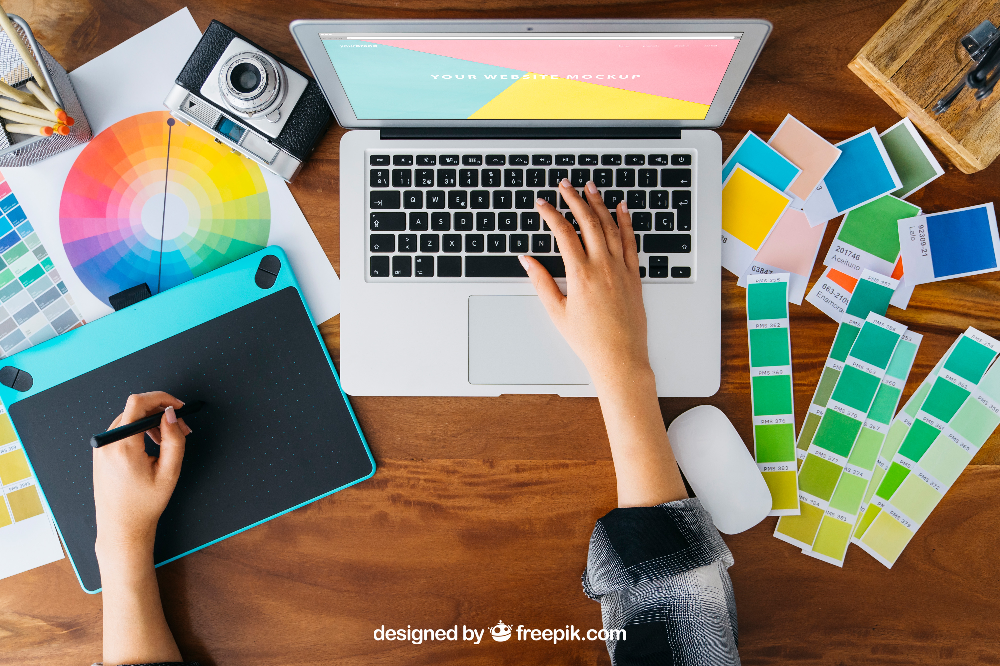

Documento con tus datos personales en el que también se recoge información sobre tus estudios y experiencia profesional.
Ejemplo:
He presentado un buen currículum vitae y he conseguido el trabajo.
Digital
Definición:
Realizado con ordenador o tecnología.
Ejemplo:
Mi profesora siempre pide los trabajos en formato digital.
Logro
Definición:
Meta conseguida.
Ejemplo:
Llegar a 4º de ESO ha sido un logro.
Mercado laboral
Definición:
Conjunto de puestos de trabajo que ofrecen las empresas y solicitan los trabajadores.
Ejemplo:
Tienes que prepararte bien para entrar en el mercado laboral.
1. Tu futuro laboral está cerca
Para muchas personas, sacarse el carnet de conducir significa salir de la adolescencia. Y lo mismo ocurre cuando entras en el mercado laboral. Pero para ambos logros hace falta superar una serie de pruebas. Para conducir, tienes que aprobar el examen teórico-práctico del carnet. Y, para trabajar, necesitas pasar una entrevista laboral, a la que accedes gracias a un currículum vitae (CV).
¿Quieres conseguir el carnet de conducir hacia tu futuro laboral? Acompáñanos en este REA.
Para empezar, mira este vídeo.
Definición:
Conjunto de puestos de trabajo que ofrecen las empresas y solicitan los trabajadores.
Ejemplo:
Tienes que prepararte bien para entrar en el mercado laboral.
Definición:
Documento con tus datos personales en el que también se recoge información sobre tus estudios y experiencia profesional.
Ejemplo:
He presentado un buen currículum vitae y he conseguido el trabajo.
Definición:
Meta conseguida.
Ejemplo:
Llegar a 4º de ESO ha sido un logro.
Lectura facilitada
Muchas personas piensan que cuando se sacan el carnet de conducir o encuentran un trabajo, empiezan a ser adultas. Para sacarnos el carnet necesitamos estudiar y, para trabajar, debemos: - elaborar y presentar un currículum vitae. - y tener una entrevista detrabajo.
¿Quieres sacarte el carnet para conseguir un buen trabajo? ¡Pronto tendrás tu propia experiencia! ¡Vamos allá!
Mira el siguiente vídeo:
Definición: Tarjeta de identificación importante con nuestros datos personales.
Ejemplo: La policía me pidió que le enseñara mi carnet.
Definición: Es una conversación que se da con el objetivo de evaluar la experiencia, la capacidad y formación que una persona tiene para desempeñar un puesto de trabajo.
Ejemplo: Mañana tengo una entrevista laboral para trabajar en una frutería.
Definición: Documento con tus datos personales en el que también se recoge información sobre tus estudios y experiencia
Ejemplo: He presentado un buen currículum vitae y he conseguido el trabajo.
Definición: Conocimiento de algo, o habilidad para ello, que se adquiere al haberlo realizado, vivido, sentido o sufrido una o más veces.
Ejemplo: Tengo 4 años de experiencia como cocinero.
Definición:Es el espacio y actividades que una persona desarrolla dentro de una empresa.
Ejemplo: Me han ofrecido un puesto de trabajo en una frutería.
Apoyo visual
2. ¿Te atreves a comenzar este viaje?
¿Serás capaz de crear tu propio currículum digital y enfrentarte a una entrevista de trabajo?
Si lo necesitas, ya sabrás hacerlo.
Definición:
Realizado con ordenador o tecnología.
Ejemplo:
Mi profesora siempre pide los trabajos en formato digital.
Lectura facilitada
¿Eres capaz de elaborar tu currículum digital? ¿Te atreves a realizar una entrevista de trabajo? Si trabajas este REA lo conseguirás. Así sabrás hacerlo cuando lo necesites.
Definición: Realizado con ordenador o tecnología.
Ejemplo: Mi profesora siempre pide los trabajos en formato digital.
Apoyo visual
3. Objetivos
¿Qué vas a aprender en este REA?
A comunicarte de forma oral y escrita adecuadamente en el mundo laboral.
A diseñar un currículum vitae con diferentes herramientas digitales actuales.
A reconocer las características de la entrevista profesional y aplicarlas adecuadamente.
Definición: Hacer un plan detallado para llevar a cabo una acción o idea.
Ejemplo: Ya he diseñado cómo será mi currículum vitae.
Definición: Algo que se expresa de forma hablada.
Ejemplo: He tenido un examen oral de inglés.
Lectura facilitada
¿Qué vas a aprender?
Aprenderás a comunicarte correctamente de forma oral y escrita en cualquier puestode trabajo.
Aprenderás a diseñar un currículum vitae utilizando diferentes herramientas digitales, como por ejemplo el vídeo.
Aprenderás también a conocer cómo es una entrevista de trabajo y practicaremos cómo realizar y afrontar una.
Definición: Hacer un plan detallado para llevar a cabo una acción o idea.
Ejemplo: Ya he diseñado cómo será mi currículum vitae.
Definición: Algo que se expresa de forma hablada.
Ejemplo: He tenido un examen oral de inglés.
Definición:Es el espacio y actividades que una persona desarrolla dentro de una empresa.
Ejemplo: Me han ofrecido un puesto de trabajo en una frutería.
 Definición:
Definición: Definición:
Definición: Para muchas personas, sacarse el carnet de conducir significa salir de la adolescencia. Y lo mismo ocurre cuando entras en el
Para muchas personas, sacarse el carnet de conducir significa salir de la adolescencia. Y lo mismo ocurre cuando entras en el 

 Definición: Conocimiento de algo, o habilidad para ello, que se adquiere al haberlo realizado, vivido, sentido o sufrido una o más veces.
Definición: Conocimiento de algo, o habilidad para ello, que se adquiere al haberlo realizado, vivido, sentido o sufrido una o más veces. Definición:Es el espacio y actividades que una persona desarrolla dentro de una empresa.
Definición:Es el espacio y actividades que una persona desarrolla dentro de una empresa..jpg "Imagen simulando una entrevista de trabajo con un currículum vitae encima de la mesa.")


 Definición: Algo que se expresa de forma hablada.
Definición: Algo que se expresa de forma hablada.  Definición: Hacer un plan detallado para llevar a cabo una acción o idea.
Definición: Hacer un plan detallado para llevar a cabo una acción o idea.